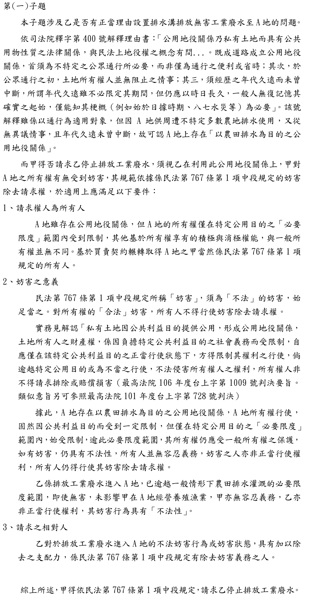
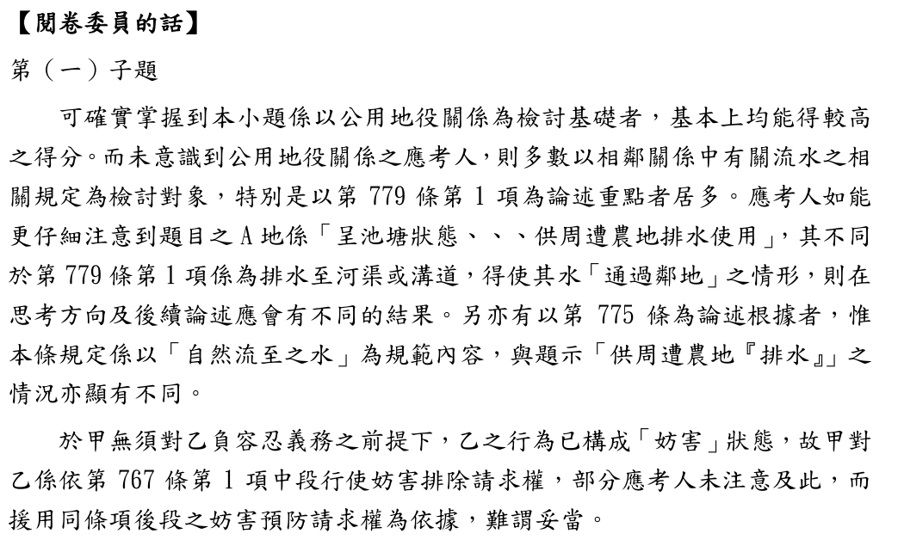

大家排水的池塘，工廠也能排嗎？
112年律師第二試｜民法與民事訴訟法（一）｜第一題第（一）小題（30分）
題目
這一題有三個小題。本頁只做第（一）小題，用得到的事實畫黃色底線。
- （一）甲請求乙停止排放工業廢水進入A地，有無理由？（30分）本頁只做這一題
- （二）甲請求丙賠償其無法繼續以A地經營養殖漁業的營業利益損失，有無理由？（30分）（本題講義）
- （三）設乙事後為預防紛爭，主動支出費用改善工廠排水設施，避免工業廢水繼續排放流入A地。乙請求甲償還其因此支出的費用，有無理由？（15分）
影片說明
影片依序示範：主播介紹、整題讀一遍並逐句畫出事實、池塘與兩個人、學弟學姊說明三步順序、釋字第400號三要件與本案涵攝、為什麼不是第779條與第775條、第767條第1項中段、106台上1009、閘門比喻、妨害人與中段後段、三個易錯點，最後把擬答從頭看一遍。
關係圖：一塊池塘、兩種水
A地是私人的地，但幾十年來讓周圍農田排水，就像「社區大家用的排水溝」。問題在於：乙的工業廢水算不算在這個用途裡。
| 人或地 | 身分 | 本小題的角色 |
|---|---|---|
| 甲 | A地所有人（買賣輾轉取得） | 請求停止排放的人 |
| 乙 | 鄰近工廠所有人 | 設排水溝排放無害工業廢水，被請求的人 |
| 周遭農地 | 不特定多數農地 | 長年把農田水排進A地，形成公用地役關係 |
| 丙 | 鄰近農地所有人 | 排有毒農田污水，是第（二）小題的事，本小題不處理 |
答題順序：三步
閱卷委員說，掌握公用地役關係的考生基本上得分較高；沒注意到的人，多半拿第779條第1項或第775條來寫，方向就錯了。
本題用到的條文
先看核心條文。原文中畫底線的部分，就是本題用到的那一句。
民法第767條第1項：所有物返還、妨害除去、妨害防止（第③步）
所有人對於無權占有或侵奪其所有物者，得請求返還之。對於妨害其所有權者，得請求除去之。有妨害其所有權之虞者，得請求防止之。
| 段 | 情形 | 請求 |
|---|---|---|
| 前段 | 東西被別人占走 | 返還 |
| 中段 | 妨害已經發生 | 除去（本題） |
| 後段 | 還沒發生，但有妨害之虞 | 防止 |
本題乙的工業廢水已經在排進A地，是已發生的妨害，用中段請求除去，不是後段防止。
民法第779條第1項：排水通過鄰地（第②步，不適用）
土地所有人因使浸水之地乾涸，或排泄家用或其他用水，以至河渠或溝道，得使其水通過鄰地。但應擇於鄰地損害最少之處所及方法為之。
白話自己的地要排水，可以「借道」鄰地，讓水流到河渠或溝道去。
本題乙的水是排進A地就停在池塘裡，A地是終點，不是借道通往河渠，所以不能用這條主張有權排水。
民法第775條第1項：自然流水（第②步，不適用）
土地所有人不得妨阻由鄰地自然流至之水。
白話鄰地的水自己順著地勢流過來（例如雨水），地主不能擋。
本題乙是自己設排水溝把廢水導進A地，是人工排放，不是自然流至。
以上條文均依全國法規資料庫現行條文核對（2026-11-17）。
第①步：釋字第400號與公用地役關係
司法院釋字第400號解釋（85年4月12日）理由書
公用地役關係乃私有土地而具有公共用物性質之法律關係，與民法上地役權之概念有間……既成道路成立公用地役關係，首須為不特定之公眾通行所必要，而非僅為通行之便利或省時；其次，於公眾通行之初，土地所有權人並無阻止之情事；其三，須經歷之年代久遠而未曾中斷，所謂年代久遠雖不必限定其期間，但仍應以時日長久，一般人無復記憶其確實之起始，僅能知其梗概（例如始於日據時期、八七水災等）為必要。
先看要件，再拿本案事實去套。左欄是解釋寫的要件，右欄是題目給的事實：
| 要件（釋字第400號） | 本案事實 | 結果 |
|---|---|---|
| 為不特定公眾所必要 | 供周遭不特定農地排水使用 | ✓ |
| 使用之初所有人無阻止 | 從未有人提出異議 | ✓ |
| 年代久遠、未曾中斷 | 日治時期至今，數十年未曾中斷 | ✓ |
第③步逐項對照：第767條第1項中段
| 要件 | 本題事實與理由 | 結果 |
|---|---|---|
| 請求權人是所有人 | 甲因買賣輾轉取得A地。公用地役只在特定公用目的的必要限度內限制所有權，其餘權能與一般所有權無異。 | ✓ |
| 有妨害，且妨害不法 | A地的公用目的只有農田排水；乙排工業廢水已逾越此目的，甲無容忍義務。妨害除去不以損害或故意過失為要件，水無害、未影響養殖也一樣（106台上1009）。 | ✓ |
| 相對人是妨害人 | 排水溝是乙設的，乙能控制排放、有除去的支配力。 | ✓ |
| 用中段不是後段 | 乙仍持續排放，妨害已發生，請求除去。 | 中段 |
答題地圖
標號層次：一、→（一）→1.。第一行直接寫結論。
考選部評分要點與閱卷委員的話
| 評分要點 | 內容 |
|---|---|
| 1. 公用地役關係 | 依釋字第400號解釋理由書；該號解釋雖以通行為適用對象，但A地供周遭不特定多數農地排水、無異議、年代久遠未曾中斷，可認存在「以農田排水為目的之公用地役關係」。 |
| 2. 請求權人為所有人 | A地所有權僅在特定公用目的之必要限度內受限制，其他權能與一般所有權無異；甲為第767條第1項之所有人。 |
| 3. 妨害須不法 | 引106台上1009（類似意旨101台上728）。乙排工業廢水逾越農田排水灌溉的必要限度，即使無害、未影響養殖，甲亦無容忍義務，乙非正當行使權利。 |
| 4. 相對人 | 乙對排放的妨害行為或狀態有除去之支配力。 |
| 結論 | 甲得依第767條第1項中段請求乙停止排放工業廢水。 |

閱卷委員的話：
- 確實掌握本小題以公用地役關係為檢討基礎者，基本上均能得較高之得分。
- 未意識到公用地役關係者，多以第779條第1項論述；但題目的A地「呈池塘狀態……供周遭農地排水使用」，不同於第779條第1項「通過鄰地」至河渠或溝道的情形。
- 也有人以第775條論述，但該條規範「自然流至之水」，與題示「排水」不同。
- 乙的行為已構成妨害，應依第767條第1項中段；部分考生援用後段妨害預防，難謂妥當。

來源：考選部〈112年司法官、律師考試第二試法律專業科目評分要點與閱卷委員的話〉民法與民事訴訟法（一）第1、2、4頁，已轉成圖片逐頁核對。
擬答
甲之請求有理由。
一、A地存在以農田排水為目的之公用地役關係
（一）公用地役關係乃私有土地而具有公共用物性質之法律關係，與民法上地役權有別。其成立須為不特定公眾所必要、使用之初土地所有人無阻止之情事，並經歷年代久遠而未曾中斷（司法院釋字第400號解釋理由書）。該號解釋雖以道路通行為對象，其要件於公眾排水亦得適用。
（二）A地地勢低窪，呈池塘狀，自日治時期即為農田排水灌溉渠道，供周遭不特定農地排水，數十年未曾中斷，亦無人異議，故存在以農田排水為目的之公用地役關係。
（三）乙之廢水係經人工溝渠導入A地，非自然流至之水，亦非使水通過A地以至河渠，無民法第775條、第779條之適用。
二、甲得依第767條第1項中段請求乙除去妨害
（一）甲為所有人：公用地役關係僅於特定公用目的之必要限度內限制所有權，其餘權能與一般所有權無異。甲因買賣輾轉取得A地，為第767條第1項之所有人。
（二）乙之排放為不法妨害：
1.私有土地形成公用地役關係，所有人僅於特定公共利益目的之正當行使下受限制；逾越該目的或為不當行使，不法侵害所有權者，所有人得請求排除（106台上1009）。
2.A地之公用目的限於農田排水。乙排放工業廢水，已逾越此一目的，非正當行使，甲無容忍義務。妨害除去不以損害或故意過失為要件，乙縱排放無害廢水、未影響養殖，仍屬干擾甲對A地之支配。乙主張有排水權利，並無依據。
（三）乙為妨害人：乙設置排水溝排放，對此妨害狀態有除去之支配力。
（四）乙之排放仍持續，屬已發生之妨害，應依第767條第1項中段請求除去，非同項後段之妨害預防。
三、結論
甲得依第767條第1項中段，請求乙停止排放工業廢水進入A地。
擬答690字（含標題、標點與數字，不含空白，以程式計算）。
字數上限：為什麼是693字
| 項目 | 數字 |
|---|---|
| 本小題可用時間 | 120分鐘 × 30/150 ＝ 24分鐘 |
| 讀題 | 約3分鐘，實際作答約21分鐘 |
| 打字速度 | 一般人中文打字約每分鐘33字（粗估） |
| 上限 | 21分鐘 × 每分鐘約33字 ＝ 693字 |
互動：換一種水，甲還能請求停止嗎？
公用地役只在「農田排水」這個目的內限制甲。換一種水、換一種流法，結果就不同。先自己想想，再點。
後兩個分頁是本頁為了對照公用地役範圍與第775條所做的假設與推論，不是考選部評分要點的內容。本頁推論
實務見解
最高法院106年度台上字第1009號民事判決（106年5月25日，廢棄發回）
……私有土地因公共利益之目的提供公用，而形成公用地役關係，土地所有人之財產權，係因負擔特定公共利益目的之社會義務而受限制，自應僅在該特定公共利益目的之正當行使狀態下，方得限制其權利之行使，倘逾越特定公用目的或為不當之行使，不法侵害所有權人之權利，所有權人非不得請求排除或賠償損害。……似見系爭土地經歷長久年代所形成之公用地役關係，係以農田排水灌溉渠道為其使用目的。果爾，就系爭土地之公共使用，自不得逾越上開目的，否則即屬公用地役權之不當行使。
判決另指出：農田灌溉用水仍應符合一定水質標準；區公所以人工溝渠導入社區家庭排水，「已逾越前述公用地役權之農用灌溉排水目的，且其經由人工溝渠導引，亦非自然流至」。
後續歷審：發回後又經最高法院多次發回；臺灣高等法院臺南分院113年度上國更四字第1號判決（114年2月20日）命水利署嘉南管理處、後壁區公所連帶給付360萬985元（置換水體及底泥費用），最高法院114年度台上字第884號裁定（114年6月12日）以上訴不合法駁回。停止排放部分的確定結果，本頁沒有逐審核對。
最高法院101年度台上字第728號民事判決（101年5月16日，兩造上訴均駁回）
評分要點列為「類似意旨」。原案是既成巷道（具公用地役關係）上擺攤，所有人請求不當得利。判決中「土地所有權人仍保有其所有權能，對於無權占有其土地者，仍得行使民法第七百六十七條之物上請求權」等語，是原審（高等法院）的理由，最高法院以「經核於法並無違背」維持。引用時寫「最高法院維持原審見解」，不寫成最高法院自己的話。
解釋在憲法法庭網站、判決在司法院裁判書系統開全文並核對右側歷審（2026-11-17）；判決原文載有當事人名稱，本頁只用身分稱呼。
學說補充
尚未加入指定學說文獻。本頁依已核對的官方評分要點、釋字第400號與上列判決整理，不另增列未查證的學說立場。
預想易錯點
以下是依閱卷委員的話與評分要點整理的易錯方向，還不是學生實際作答的統計。
| 可能的錯誤 | 應該怎麼寫 |
|---|---|
| 沒看出公用地役關係，直接用第779條或第775條 | 先用釋字第400號認定公用地役關係，再說明第779條（通過鄰地至河渠）、第775條（自然流水）都不合（閱卷委員點名）。 |
| 用第767條第1項後段請求防止 | 乙已在排放，妨害已發生，用中段請求除去（閱卷委員點名）。 |
| 以為「無害、沒影響養魚」就不能請求 | 妨害除去不以損害為要件；逾越公用目的，甲就無容忍義務（評分要點）。 |
| 以為有公用地役，甲就喪失所有權 | 公用地役只在特定公用目的的必要限度內限制所有權，甲仍是所有人。 |
| 把要件和本案事實混在一起寫 | 先寫釋字第400號的要件，再逐一涵攝「日治時期、不特定農地、無異議、未中斷」。 |
延伸思考
參考資料
歡迎指正
相關連結
民法講義總覽 同一題第（二）小題：營業損失與第184條第1項前段 113年第一題（一）：詐害債權撤銷 113年第一題（三）：袋地通行權與權利瑕疵 113年第二題（三）：債權雙重讓與 GitHub 原始檔